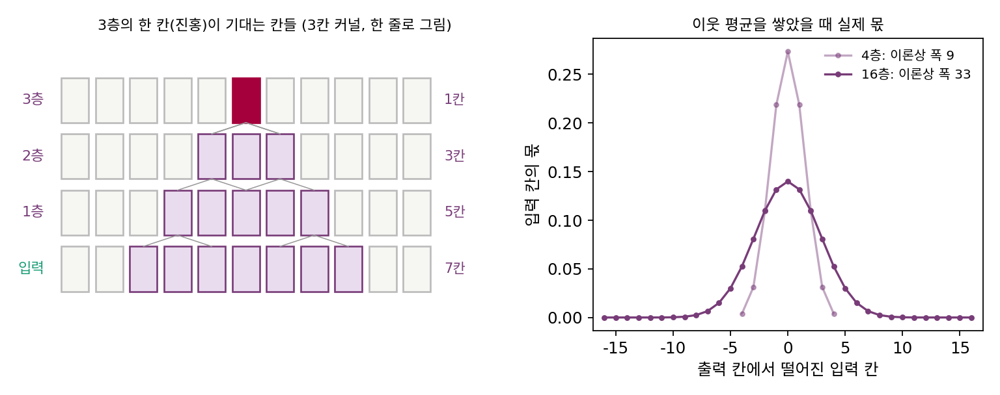

수용 영역: 층을 쌓아야 멀리 본다
3 × 3 커널 하나는 바로 옆 칸까지만 본다. 윤곽을 찾기에는 충분하지만, 그림 속 동그라미가 얼굴인지 접시인지 알려면 눈, 코, 입이 함께 놓인 넓은 구역을 봐야 한다. 잡음 걷기도 같다. 잡음이 짙을수록 커널을 넓게 펴야 했다. 커널을 키우는 대신 작은 커널을 여러 층 쌓으면 출력 한 칸은 입력의 얼마나 넓은 곳을 보게 될까?
역사: 유리 슬라이드의 그림자
1950년대 말 존스홉킨스 대학에서 함께 연구하던 허블(David Hubel)과 비셀(Torsten Wiesel)은 마취한 고양이의 시각 피질에 가는 전극을 꽂고, 눈앞 화면에 빛을 비춰 신경세포 하나의 반응을 기록했다. 세포마다 망막의 어느 좁은 구역에 빛이 닿을 때만 반응이 바뀌었다. 이 구역을 그 세포의 「받는 영역」이라 부른다. 처음에는 검은 점과 흰 점을 비췄는데 피질 세포는 좀처럼 반응하지 않았다. 허블의 노벨상 강연에 따르면, 점을 그린 유리 슬라이드를 장치에 넣고 빼던 중에 세포가 기관총처럼 반응했다. 점이 아니라 슬라이드 가장자리가 망막에 드리운 희미하지만 또렷한 그림자, 곧 밝은 바탕 위의 곧은 선이 세포가 원하던 것이었다. 두 사람은 1959년 논문 「고양이 줄무늬 피질 신경세포 하나하나의 받는 영역」을 시작으로, 피질 세포들이 저마다 특정한 방향의 선과 윤곽에 반응한다는 것을 보였고 1981년 노벨 생리의학상을 받았다.
이 이야기는 합성곱 신경망과 두 번 만난다. 하나는 윤곽 커널이다. 르쿤과 동료들의 1989년 논문은 학습으로 얻은 커널 일부가 허블과 비셀이 생물의 시각 체계에서 찾은 특징 검출기와 놀랍도록 닮았다고 적었다. 다른 하나가 이 절의 주제인 받는 영역이다.
층마다 한 칸씩 넓어진다
3칸 커널을 한 줄로 그려 층을 쌓아 보자. 1층의 한 칸은 입력 3칸을 본다. 2층의 한 칸은 1층의 3칸을 보는데, 그 3칸이 각각 입력 3칸씩을 보고 서로 겹치므로 입력으로는 5칸이다. 3층이면 7칸이다. 층 하나마다 양쪽으로 한 칸씩 넓어진다.

출력 한 칸의 값에 영향을 줄 수 있는 입력 칸들의 구역을 수용 영역 (출력 한 칸이 볼 수 있는 입력의 구역 / receptive field)이라 한다. 허블과 비셀이 신경세포에 쓴 받는 영역과 같은 말이다. 한 변이 k칸인 커널을 L층 쌓으면 수용 영역의 한 변은 이렇다.
3 × 3 커널이면 층 하나에 2칸씩, L에 비례해 넓어진다. 10층이면 21칸, 16층이면 33칸이다.
닿는 것과 기대는 것은 다르다
그런데 수용 영역에 든 칸들이 똑같이 중요할까? 이웃 평균을 여러 번 쌓은 경우를 보자. 출력 한 칸이 입력 칸마다 받는 몫은, 가운데 칸에 둔 1에 이웃 평균을 L번 걸어 번진 모양과 같다. 이웃 평균 한 번은 몫을 왼쪽으로 ¼, 제자리에 ½, 오른쪽으로 ¼씩 나눠 옮기니, 몫이 옮겨 간 거리의 분산은 ¼ + ¼ = ½이다. L번 거는 것은 서로 상관없는 이런 걸음을 L번 이어 걷는 것과 같고, 서로 상관없는 걸음을 이으면 분산이 더해진다. 그래서 L번 뒤의 분산은 L/2, 표준편차는 √(L/2)로 횟수의 제곱근으로만 자란다. 16층이면 수용 영역은 33칸인데 몫의 표준편차는 2.83칸이고, 한 줄에서 몫의 95%가 가운데에서 ±5.7칸 안에 몰려 있다. 수용 영역 끝 칸의 몫은 (¼)¹⁶ ≈ 2.3 × 10⁻¹⁰이다. 닿기는 하지만 거의 기대지 않는다.
이론상 폭은 L에 비례하고 실제로 기대는 폭은 √L에 비례하므로, 층을 쌓을수록 둘의 차이는 벌어진다. 위젯에서 층 수를 바꿔 이론상 네모와 진한 구역을 견줘 보자.
ML에서: 작은 커널을 깊이 쌓는다
2014년 옥스퍼드 대학의 시모니언(Karen Simonyan)과 지서먼(Andrew Zisserman)은 이웃을 보는 합성곱 층을 모두 3 × 3 커널로 쌓은 신경망으로 그해 ImageNet 대회의 물체 위치 찾기 부문 1위, 분류 부문 2위에 올랐다(연구실 이름을 따 흔히 VGG라 부른다). 논문은 그 까닭을 수용 영역으로 설명했다. 3 × 3 층 둘은 5 × 5, 셋은 7 × 7의 수용 영역을 갖는다. 입력과 출력의 특징 수가 같은 C라면 3 × 3 세 층의 가중치는 3 × 3² × C² = 27C²이고 7 × 7 한 층은 49C²로 81% 더 많다. 게다가 층 사이에 비선형 함수가 세 번 끼어 더 복잡한 판정을 할 수 있다.
2016년 토론토 대학의 뤄(Wenjie Luo)와 동료들은 깊은 합성곱 신경망에서 출력 한 칸이 입력 칸마다 실제로 얼마나 기대는지 재어, 그 구역을 「유효 수용 영역」이라 불렀다. 유효 수용 영역은 가우시안 모양이고 이론상 수용 영역의 일부만 차지했다. 이웃 평균처럼 가중치가 모두 양수인 경우를 분석하면 그 크기는 층 수의 제곱근으로 자라고 이론상 수용 영역에 대한 비율은 1/√(층 수)로 줄어든다. 논문은 이 결과를 「놀라웠다」고 적었다. 실험에서도 유효 수용 영역의 크기를 층 수에 대해 로그 눈금으로 그리면 기울기가 0.56으로, 제곱근의 0.5에 가까웠다. 다만 학습을 거치면 유효 수용 영역이 처음보다 눈에 띄게 넓어진다는 관찰도 함께 적었다.
문제 7. 이웃에게만 전하는 소문
집들이 한 줄로 늘어선 마을에서, 저녁마다 집집이 들은 이야기의 절반은 자기 집에 남기고 ¼씩을 양옆 집에 전한다. 첫날 가운데 집에서 소문이 시작됐다. (가) 8일 저녁이 지나면 소문은 가장 멀리 몇 집 떨어진 곳까지 닿을 수 있는가? (나) 그때 가운데에서 2집 안쪽(5집)에 남은 소문의 몫은 얼마이고, 가장 먼 집의 몫은 얼마인가?

하루에 한 집씩이니까 (가)는 8집이요. 양쪽으로 8집씩, 합쳐서 17집에 닿아요. 그럼 17집이 다 비슷하게 들었겠네요.

가장 먼 집까지 가는 길은 몇 가지예요?

8일 내내 한쪽으로만 가야 하니까 한 가지요. 매일 ¼씩 줄어드니 (¼)⁸ = 0.0000153이에요. 거의 못 들었네요.

(나)는 이웃 평균을 8번 건 몫이니까 계산해 보면 가운데 5집에 79.0%가 몰려 있어. 표준편차가 √(8/2) = 2집이라 ±2집이 대략 1표준편차고.

17집에 닿았다는 말과 5집에 80% 가까이 몰렸다는 말이 모두 맞아요. 어느 쪽이 소문이 「퍼진 넓이」에 가까울까요?

몰린 쪽이요. 닿을 수 있는 끝은 날수에 비례하지만 실제로 퍼진 폭은 날수의 제곱근이라, 날이 갈수록 둘이 벌어져요.

단톡방 공지가 전달에 전달을 거치면 이론상 학과 전체가 받지만, 실제로 읽은 건 같은 학년 몇 명뿐인 거랑 같네요.
문제 8. 두 층이냐 큰 커널 하나냐
입력과 출력이 모두 특징 64개짜리인 합성곱 층을 생각한다(치우침은 뺀다). (가) 3 × 3 층 둘과 5 × 5 층 하나의 수용 영역과 가중치 수를 견주어라. (나) 3 × 3 커널의 칸 사이에 한 칸씩 띄어(가로세로 5칸 구역의 아홉 칸만) 거는 것을 팽창 합성곱이라 한다. 띄우는 간격을 1, 2, 4로 늘려 가며 세 층 쌓으면 수용 영역은 몇 칸인가?
수용 영역은 둘 다 5칸이에요. 가중치는 두 층이 2 × 9 × 64 = 1,152, 한 층이 25 × 64 = 1,600이요.
커널 한 칸이 이어 주는 것은 입력 특징 하나와 출력 특징 하나예요. 특징이 64개씩이면 칸 하나에 가중치가 몇 개죠?

64 × 64요. 아, 64를 한 번만 곱했네요. 두 층은 2 × 9 × 64² = 73,728, 한 층은 25 × 64² = 102,400이에요. 두 층이 28% 적어요.
(나)는 간격 d로 띄운 3칸 커널이 양쪽으로 d칸씩 넓히니까 1 + 2(1 + 2 + 4) = 15칸이야. 3 × 3을 그냥 세 층 쌓으면 7칸인데 같은 가중치로 두 배 넘게 넓어.
그럼 15칸 안의 칸은 모두 출력에 닿나요?

잠깐, 간격 4인 층은 네 칸씩 건너뛰니까… 아래 층들이 1, 2 간격으로 사이를 메워 주면 다 닿겠지만, 간격을 1, 4, 16처럼 너무 성급히 키우면 사이에 아무도 안 보는 칸이 생기겠어요.

그래요. 수용 영역의 넓이만 세지 말고 그 안이 빈틈없이 메워지는지도 봐야 해요.
수학 수업에서 2진법이 1, 2, 4, 8로 모든 수를 빈틈없이 만드는 거랑 같네요. 1, 4, 16이면 2나 3을 못 만들고요.
문제 9. 64칸 그림 전체를 보려면
디퓨전 신경망이 가로세로 64칸짜리 입력을 받는다. 3 × 3 커널만 쌓아 출력 한 칸이 입력 전체를 보게 하고 싶다. (가) 수용 영역이 64칸 이상이 되려면 몇 층이 필요한가? (나) 그 층 수에서 이웃 평균처럼 가중치가 양수인 커널을 쌓았다면, 몫의 ±2 표준편차 폭은 몇 칸인가? (다) ±2 표준편차가 그림 한 변의 절반인 ±32칸에 닿으려면 몇 층이 필요한가? (풀어 본 뒤 위젯 2의 「문제 9 불러오기」로 확인해 보자.)
1 + 2L ≥ 64니까 L = 32요. 32층이면 수용 영역이 65칸이라 전체를 다 봐요.
다 「본다」는 게 무슨 뜻이었죠?
닿는다는 뜻이었어요. 기대는 폭은 표준편차 √(32/2) = 4칸이니까 ±2 표준편차가 ±8칸, 폭 17칸 남짓이에요. 이론상 65칸의 4분의 1쯤이네.

(다)는 ±2 표준편차가 32니까 표준편차가 16이고, √(L/2) = 16이면 L = 512예요. 512층이요? 층마다 64 × 64칸을 다 계산하면 너무 무거운데요.
몫이 가운데에 몰리는 건 실제 신경망에서도 그런지 확인해야겠죠. 뤄와 동료들의 측정에서 기울기가 0.56이었던 것 기억나요?
제곱근보다 조금 빠를 뿐이니까 크게 달라지지 않아요. 작은 커널을 같은 크기에서 쌓기만 해서는 64칸 그림의 왼쪽 끝과 오른쪽 끝을 함께 보기가 어렵다는 거네요.
맞아요. 층을 쌓는 것만으로는 멀리 보기 어렵다는 것, 이 장이 남기는 물음이에요.
전화 연락망으로 전교생에게 알리려면 단계가 너무 많아서, 결국 방송실에서 한 번에 알리는 게 빠른 거랑 같네요.